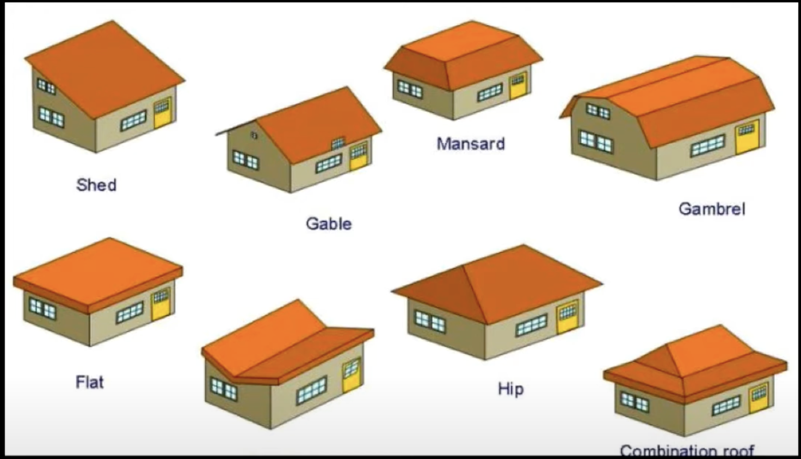

Imagine you’re building a house and facing familiar issues. One thing you need is the “Blueprint”. Imagine building a house without a plan, oh wait, you can imagine that? I can tell you cant! :) For example, you need to ensure that there’s only one main entrance for security reasons. In coding, this relates to making sure there’s only one way to access certain information or resources. Only specific people who should access a secret information should be the one and only liable if there is something bad to happen. Which we can also relate to (Zero-trust-policy).
Specific parts the house that we will build in this essay is something that can will react when something changes, but they don’t directly communicate to each other. This is like having cameras around the house that observe and react to changes without needing direct communication. In addition, consider a scenario where you need to make different furniture pieces based on specific needs (lets say a vase!) without revealing the complicated manufacturing process. That’s similar to how in coding, you might create different objects or elements based on requirements without showing the complex inner workings.
In my coding experience, I’d say for some times I considered using clever solutions. For example working on a project that needed constant updates without causing a mess between different branches like the Final Project website, I implemented a method where different sections could react to changes without talking directly to each other, like those cameras placed around a house.
Not all solutions need a smart or proper way of coding. I have been using secret techniques (ChatGPT) to help me solve problems while making sure the overall code is organized and simple to understand. Just as blueprints guide architects that architects are using, in coding I tend to use “FlowChart” to apply these design patterns and have been my guiding principles in making programs and our final website.